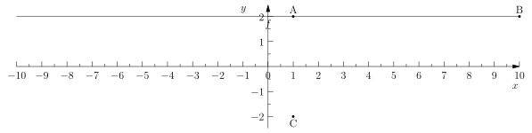
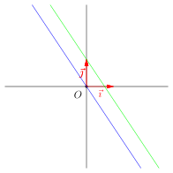
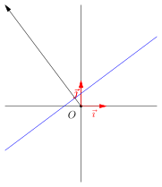
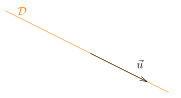
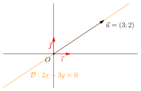
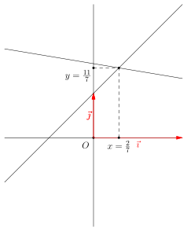

Equations De Droites
Table of Contents
1. Motivations
Nous avons vu dans le cours les notions suivantes :
- Les vecteurs
- Le déterminant
- Les fonctions affines.
Ces trois notions sont très liées à ce cours, puisque nos allons décrire toutes les droites du plan à l'aide d'équations.
Avoir une équation qui décrit un objet mathématiques permet de résoudre la plupart des problèmes qui lui sont associés. Par exemple, nous verrons que nous pourront déterminer le point d'intersection de deux droites à l'aide de leur équation respectives. Nous avons déjà vu comment calculer le projeté d'un point sur une droite en utilisant une équation de droite, avec le déterminant.
2. Définition.
Soit \(a\) et \(b\), et \(c\) trois nombres réels. On appelle une équation de droite, une équation de la forme suivante : \[ ax + by = d \]
Pourquoi cette équation ? C'est précisé par la proposition ci-dessous.
Soit \((D)\) une droite du plan, avec \((O, \vec{\imath}, \vec{\jmath})\) un repère orthonormé. Alors, il existe \(a\), \(b\), et \(c\) trois nombres réels, avec \(a\) et \(b\) non simultanément nuls, tels que pour tout point du plan \(M\) de coordonnées \((x;y)\), avec \(x \in \mathbb{R}\) et \(y \in \mathbb{R}\), on ait : \[ M \in (D) \quad \text{Si et seulement si} \quad ax +by =c \]
Ce qu'il faut retenir, c'est donc :
- Pour toute droite du plan, on peut trouver \(a\), \(b\), et \(c\) pour que l'équation \(ax + by=c\) ait pour ensemble solution exactement cette droite
- et vice versa, pour chaque \(a, b, c\), l'ensemble solution de l'équation \(ax+by=d\) est une droite.
La démonstration de se résultat repose sur le déterminant, et quelques part, nous avons traités des cas particulier qui se transposent en une démonstration formelle correcte.
3. Exemples
3.1. Une droite telle que \(a = 0\)
Dans la partie précédente, nous avons vu que les équations : \[ ax + by = c \] admet comme ensemble de solution une droite, et vice versa, une droite admet au moins une équation pour la représenter. Mais \(a\), \(b\) ou \(c\) sont des nombres réels, donc peuvent par exemple être nul !
Si \(a = 0\), on peut essayer de voir quelle droite est représentée par exemple par l'équation : \[ 3y = 6 \] Cela correspond donc l'ensemble des points \(M(x;y)\) du plan, tel que l'ordonnée \(y\) multiplié par \(3\) donne \(6\). Donc \(A=(1, 2)\) fait partie des solutions, puisque \(3 \times 2 = 6\), mais aussi \(B=(10, 2)\). Par contre \(C=(1, -2)\) n'en fait pas partie.

3.2. Qu'est-ce qui se passe si on change le paramètre \(c\)?
Regardons maintenant deux équations de droites : \[ (E_1) \quad 3x + 2y = 2 \]
\[ (E_2) \quad 3x + 2y = 0 \]
Ce sont deux équations qui semblent similaires, et pour cause, la seule différence est la valeur de la constante \(c\), qui vaut dans la première \(2\) et dans la deuxième \(0\).
Affichons ces deux droites dans le plan, à l'aide de l'ordinateur.

On obtient deux droites que j'ai colorié de couleurs différentes. On remarque deux choses :
- Les deux droites sont parallèles
- L'une des droites passent par l'origine du repère.
Sauriez-vous associer à chaque droite son équation ?
Réponse : \((E_2)\) est une équation de la droite bleu, et \((E_1)\) est une équation de la droite verte.
En effet, le point \(O(x=0, y=0)\) est bien solution de l'équation \(3x + 2y =0\), car \(3\times 0 + 2 \times 0 = 0\), et seule la droite bleue passe par l'origine du repère.
Conclusion : le paramètre \(c\) permet de faire varier le moment où là droite coupe l'axe des ordonnées.
Avec les conditions données dans les propositions précédentes, le nombre \(c\) est nul si et seulement si la droite passe par l'origine du repère.
Si la droite passe par l'origine du repère, alors \(a\times 0 + b\times 0 = 0 = c\) donc \(c\) est nul.
Si \(c\) est nul, alors l'origine est une solution de l'équation \(ax + by = 0\), donc l'origine fait partie des points sur la droite.
3.3. Trouver les paramètres \(a\), \(b\) et \(c\) d'une droite.
Pour trouver les paramètres d'une équation d'une droite qui passe par deux points, il faut utiliser le déterminant. Relisez le cours associés.
3.4. Hors programme : un vecteur orthogonal à la droite.
On considère une équation \(ax+by=c\) d'une droite dans le plan. À quoi correspond le vecteur \(\vec{u} = (a, b)\) pour cette droite ?
Voici un exemple :

Le vecteur \(\vec{u} = (a; b)\) est un vecteur dont la direction est orthogonal à la droite ! Pour démontrer ce résultat, vous aurez besoin du produit scalaire introduit l'an prochain. Mais cela permet déjà de tracer très rapidemment une droite en connaissant une de ses équations.
4. Combien d'équations pour décrire une droite ?
Il existe une infinité d'équations «différentes» pour décrire la même droite du plan. En effet, regardez les deux équations suivantes : \[ -2x + 5y = 9 \quad 4x - 10y = -18 \] Clairement, on obtient la deuxième équation en multipliant par \(-2\) la première. Donc, les deux admettent le même ensemble solution. Mais c'est techniquement deux équations différentes.
C'est pour cela que l'on ne peut pas parler de l' équation d'une droite. Mais on dira une (attention à l'article) équation de la droite, car, si on en trouve une, on en trouve une infinité.
Deux équations désignent la même droite si et seulement si elles sont proportionnelles.
5. Lien entre une équation de droite et le vecteur directeur d'une droite.
5.1. Définition
Soit \(\mathcal{D}\) une droite dans le plan. On dit que \(\vec{u}\) est un vecteur directeur de la droite \(\mathcal{D}\) si et seulement si la direction du vecteur \(\vec{u}\) est parallèle à la droite \(\mathcal{D}\).
Dans la définition, on demande simplement à la direction d'être parallèle à la droite \(\mathcal{D}\), mais ce qu'il faut garder en tête, c'est plutôt le dessin suivant (avec le vecteur «sur» la droite \(\mathcal{D}\)):
Voici une exemple de vecteur directeur \(\vec{u}\) de la droite (en orange) du plan \(\mathcal{D}\).

5.2. Trouver les coefficients \(a\) et \(b\) à partir d'un vecteur directeur.
Soit \(\vec{u} = (a;b)\) un vecteur dont les coordonnées sont données dans un repère orthonormé du plan. Qu'elles serait les équations des droites qui admettent comme direction ce vecteur ?
Toutes les droites qui admettent comme direction le vecteur \(\vec{u} = (a;b)\) admettent comme équations : \[ bx - ay = c \]
Pour retrouver la formule, il suffit de remplacer \(x\) par \(a\) et \(b\) par \(y\).
5.2.1. Exemple.
On considère le vecteur \(\vec{u} = (3; 2)\). D'après la proposition précédente, la droite \(\mathcal{D}\) d'équation : \[ 2x - 3y = 0 \] Fait partie des droites qui sont parallèles à la direction de \(\vec{u}\).
Vérifions tout cela.

5.3. Hors programme : un vecteur orthogonal à un autre
Si on applique ce que l'on a vu précédemment, on peut en déduire que le vecteur de coordonnées \((b, -a)\) est toujours orthogonal au vecteur de coordonnées \((a , b)\). Par exemple, dans la situation précédente, le vecteur \((2, -3)\) est orthogonal au vecteur \(\vec{u}\).
6. Point d'intersection de deux droites : résolution de systèmes linéaires.
6.1. Motivations
Si on souhaite trouver un point qui appartiennent à deux droites en même temps (autrement dit, un point d'intersection des deux droites), alors il faut résoudre un système comme il suit :
\begin{align*} \left\{ \begin{array}{ll} ax + by &=c \\ a'x + b'y &=c' \end{array}\right. \end{align*}Il existe plusieurs méthodes pour résoudre ce type de système, que l'on appelle un système linéaire de deux équations à deux inconnues. Décortiquons ce nom :
- système : ensemble de deux ou plusieurs équations
- liéaire : les inconnues sont «simplement» multipliées par des constantes et ajoutées entre elles. Par exemple, nous n'auront pas des \(x\) multipliés par des \(y\), ou bien des \(x^2\) dans ces systèmes.
- deux équations à deux inconnues : les inconnues sont \(x\) et \(y\), et il y a deux équations (deux lignes dans notre système).
6.2. Première méthode : la substitution
La substution n'est pas une méthode qui marche toujours le mieux, mais parfois, elle permet de résoudre rapidement des systèmes linéaires de deux équations à deux inconnues.
L'idée est d'exprimée une variable par rapport à une autre à partir d'une ligne, et injecter le tout dans l'autre ligne.
Voici un exemple. On considère le système suivant :
\begin{align*} \left\{ \begin{array}{ll} x + 3y &= 5 \\ -2x + y &= 1 \\ \end{array} \right. \end{align*}On voit que la deuxième ligne permet de remplacer \(x\) par \(5-3y\). On peut donc injecter cette nouvelle donnée dans la deuxième ligne :
\begin{align*} \left\{ \begin{array}{ll} x &= 5 - 3y\\ -2(5 - 3y)+ y &= 1 \\ \end{array} \right. \end{align*}En simplifiant, on obtient :
\begin{align*} \left\{ \begin{array}{ll} x &= 5 - 3y\\ -10 + 6y+ y &= 1 \\ \end{array} \right. \end{align*}autrement dit :
\begin{align*} \left\{ \begin{array}{ll} x &= 5 - 3y\\ -10 + 7y &= 1 \\ \end{array} \right. \end{align*}Finalement, \(7y = 11\), donc \(y = \frac{11}{7}\). Une fois que l'on a trouvé, \(y\), on peut trouver \(x\) en remplaçant, dans la première ligne, \(y\) par sa valeur trouvée :
\begin{align*} x &= 5 - 3y \\ x &= 5 - 3\times \frac{11}{7} \\ x &= \frac{35 - 33}{7}\\ x &= \frac{2}{7} \end{align*}On obtient finalement comme solution \(x = \frac{2}{7}\), et \(y = \frac{11}{7}\), et on peut vérifier notre résultat en affichant les deux droites par ordinateur.

6.3. Méthode du pivot de Gauss
Cette méthode est celle qui fonctionne à «tous les coups», et qui est généralisable à plusieurs équations linéaires à plusieurs inconnues (pas que \(2\)). L'idée est de manipuler les lignes entre elles pour éliminer les variables les unes après les autres. Reprenons l'exemple précédent, et regardons ce que donne la résolution du système. J'ai noté \((L_1)\) et \((L_2)\) pour numéroté les lignes du système.
\begin{align*} \left\{ \begin{array}{lll} (L_1) & x + 3y &= 5 \\ (L_2) & -2x + y &= 1 \\ \end{array} \right. \end{align*}On voit que la ligne \(2\), qui est \(-2x + y = 1\), a un coefficient \(-2\) devant le \(x\). Donc, si on multiplie \((L_1)\) par \(2\), on obtient l'équation \(2x +6y = 10\), et dans cette situation, le \(2x\) et le \(-2x\) vont donc s'annuler. On remplace donc la ligne \((L_2)\) par la ligne \((L_2) + 2(L_1)\). On obtient :
\begin{align*} \left\{ \begin{array}{lll} (L_1) & x + 3y &= 5 \\ (L_2) + 2(L_1) & -2x + y + 2(x + 3y ) &= 1 + 2\times (5)\\ \end{array} \right. \end{align*}La ligne \((L_1)\) reste inchangée. On obtient finalement :
\begin{align*} \left\{ \begin{array}{lll} (L_1) & x + 3y &= 5 \\ (L_2) - 2(L_1) & 7y &= 11\\ \end{array} \right. \end{align*}Finalement, on retrouve directement la valeur de \(y = \frac{11}{7}\). Une fois que l'on a trouvé \(y\), on prodèce exactement de la même manière que lors de la méthode précédente pour trouver \(x = \frac{2}{7}\).